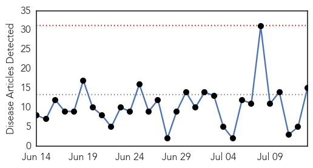
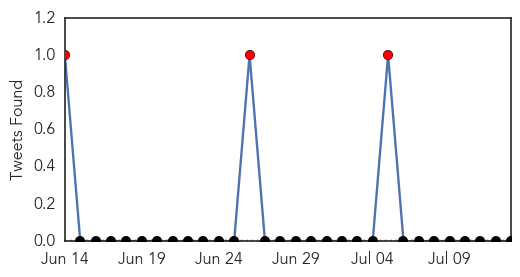

Influenza
30-Day Web Trend
0 alerts, 0 warnings

30-Day Twitter Trend
0 alerts, 0 warnings

Article Locations

Article Confidences

Top Articles:
- 0.996
- Waikato DHB call for influenza vaccinations
- 0.994
- Flu season declared in the Waikato
- 0.992
- Kiwis urged to vaccinate as flu runs rampant
- 0.978
- Flu-like illness doubled in Hawke’s Bay
- 0.936
- UK Avian Flu Case Confirmed as H7N7
- 0.924
- Record numbers of influenza cases: Ley
- 0.891
- S Korea travel alert for HK unreasonable, say health experts
- 0.881
- South Korea issues travel alert on Hong Kong after flu outbreak
- 0.881
- South Korea issues travel alert on Hong Kong after flu outbreak
- 0.863
- Highly pathogenic H7N7 bird flu confirmed at Lancashire farm
- 0.794
- Diverse avian flu strains hit UK, Taiwan, South Africa
- 0.751
- July 13, 2015 Archives
- 0.751
- July 12, 2015 Archives
- 0.716
- Dog owners in S.C. should be on the lookout for canine influenza
- 0.643
- The Vaccine Safety Double Standard
Top Tweets:
-
No tweets found for Jul 13, 2015
Dengue Fever
30-Day Web Trend
6 alerts, 5 warnings

30-Day Twitter Trend
4 alerts, 0 warnings

Article Locations

Article Confidences

Top Articles:
- 0.970
- What are Delhi hospitals doing to prepare for monsoon?
- 0.957
- DOH warns public of rainy day illnesses
- 0.819
- Unraveling the Relationship Between Climate Change and Health
- 0.731
- Eid holidays: ‘Travellers from Karachi might bring dengue fever with them’
- 0.624
- Malaysia health officials go after local officials for failing to ‘combat dengue’
- 0.600
- Foreigners not warned about dengue, says Phuket Poll
- 0.596
- Foreigners not warned about dengue, says Phuket Poll
Top Tweets:
- 0.713
- Flavivirus news: Thai Public Health Min warns of dengue fever during rainy season - ThaiVisa Ne... http://t.co/YJYtWRKOz9 pathogenposse